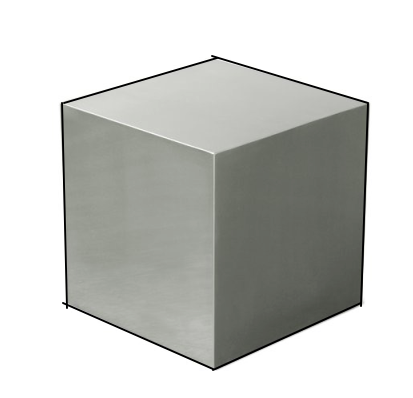
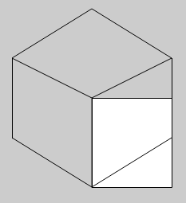
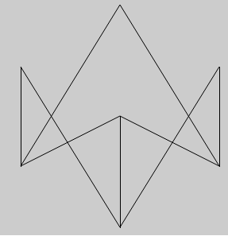

These are drawings of different sized cubes. I'll talk about the weird ones in a minute. This is an html wepage that is linked to a Javascript file. I drew with a template you can find here. I used a lot of math program these cubes. I'll explain it all.
I found out that a cube was made out of hexagons. There is one hexagon for each vertice of a cube. There are eight vertices so there are eight hexagons that make a cube. Here is how hexagons make a cube:
The black border around the cube makes a hexagon. It might be a little hard to see that but its there.
Since I am a 2D programmer, I made a function that would draw a hexagon. I made it so x and y were the center of the hexagon. Each line is based on the x, y, and scale (how far away the middle of the line is from the center). This is when the Pythagorean Theorem came into play. In some cases, I had to find out how far away the vertices were from the center of the hexagon instead of the distance between the middle of the edge and the center. In other words, the distance to a vertice is bigger than the distance to the middle of an edge.
The equation I used to find out the distance between a vertice and the center was: L = sqrt(pow(sc, 2) + pow((sc/2), 2)). sc is scale.
After I made the drawHexagon function, I made the other part the would draw the rest of the cube (the Y-shape inside the hexagon that makes it look like a cube). This was the drawWindmill function. This part just has the same stuff as before with the distance between a vertice and the center of the hexagon.
I finally grouped together the two functions and turned it into the drawCube function.
Now we can talk about the weid looking figures. Believe it or not, they are still cubes. After I was messing around a little bit just drawing a bunch cubes, I was curious to see what would happen if I put in a negative value for the scale. I called the drawCube function with -10 as it's scale and it looked like whatever you saw up above.
Pretty weird, right?